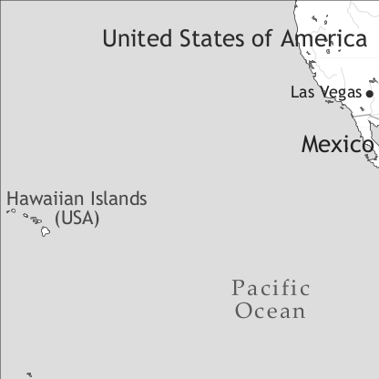

by Viveka Velupillai

Hawai'i Creole (autoglossonym Pidgin) is spoken by about 600,000 people, that is, roughly half the population, on the Hawaiian Islands, located in the North Pacific Ocean. Additionally, about 100,000 speakers are found on the mainland of the United States, in particular along the West Coast, in Las Vegas (Nevada), as well as in Orlando (Florida).
In 1778 James Cook “discovered” the Hawaiian Islands. They turned out to be a convenient middle stop for the Pacific fur trade, later also sandalwood trade, between the north-western American coast and the big ports of China (the “Alaska-Hawaii-Canton run”; Carr 1972). At first, ships, for the most part American, kept returning to the same few places and mainly docked at Kealakekua Bay (on the island of Hawaiʻi) and Waimea (Kauaʻi). Almost immediately, as the need for a lingua franca arose, Pidgin Hawaiian emerged. The first known contact language on Hawaiʻi thus had the Hawaiian language as its lexifier. For further information on Pidgin Hawaiian, see Roberts (in vol. III).
Starting with the 1820 arrival in Kailua (island of Hawaiʻi) of Christian missionaries from New England, a drive for spreading religion as well as literacy and general education was initiated. English schools were initially restricted to the royal family. But even though public schools educating in Hawaiian had been set up, by 1850 English had gained so much in prestige, and was used to such an extent throughout the islands, that schools teaching in English were set up (Kuykendall 1968).
Almost at the same time as the first missionaries arrived, the whaling period (about 1820–1860) began, which added to the influx of foreign people and languages. Also, many Hawaiians enrolled on these ships, spending large amounts of time in intense language contact. As the naval traffic to and from Hawaiʻi increased, so did the demand for supplies, leading to the emergence of larger and larger enterprises, which in turn both offered and demanded more labour.
The first sugar plantation was founded in 1835. As a rule the owners and foremen would be haoles (‘white persons’) while Hawaiians formed the labour force. Due to the various diseases introduced by the newcomers, however, the indigenous population kept declining and had by 1854 “been reduced by at least 75 percent” (Linnekin 1991: 95). By 1875 labour had to be imported, largely from the Atlantic islands of Portugal (Madeira and the Azores) and from East Asia, especially southern China. This led to a reorganization of the plantation structure, where the Portuguese took the roles as foremen, while the East Asians, many of whom had already spent a certain amount of time on the US mainland, mainly California, made up the labour force. With this Hawaiʻi Pidgin English emerged, out of which Hawai'i Creole grew (Roberts 1998). The first and major input languages of Hawai'i Creole were thus Chinese languages (especially Cantonese and Hakka) and Portuguese. By the time the other ethnic groups – Japanese, Korean and Filipino – arrived and started to form major communities, Hawai'i Creole had already begun to develop and was, by about 1930, fully established (Roberts 2000). As Sato (1985) has shown, not only the plantation context, but also schools and playgrounds were major areas where creolization took place. English was used in the classrooms; however, teachers were often non-native speakers of English – haole children tended to go to private schools and were thus not available as language models. Thus the first locally born generation created an interethnic communication tool that stabilized as the number of second generation locally born who learned Hawai'i Creole natively increased.
Hawai'i Creole is not recognized as one of the official languages of the Hawaiian Islands, despite the fact that roughly half of the population speaks it natively. While attitudes are slowly changing, especially with targeted awareness programs and academic debates at the University of Hawaiʻi at Mānoa (see, for example, Sakoda & Siegel 2003), the language is still stigmatized as an obstacle for education and advancement. Although it is still mainly used as an informal spoken language, literature partly (for instance, only the dialogue) or fully in Hawai'i Creole has been published for many decades. Since the 1990s the body of literature published on the Hawaiian Islands by and for locals has been growing exponentially in all genres.
The other main languages spoken are Standard American English and Hawaiian. The use of Hawaiian as a first language is steadily shrinking and as far as I am aware all first-language Hawaiian speakers also use Hawai'i Creole and/or Standard American English. However, with awareness and education programs, Hawaiian as a second language is increasing.
Hawaiʻi Creole has nine vowels and four diphthongs ([ei, ai/aɪ, aʊ, ɔɪ], see Table 1). The close-mid central front vowel [e] tends to mainly occur in exclamations (eg. eh!) and diphthongs, although the [i] in the diphthong is often elided in speech, e.g. [a stei tiŋkiŋ] > [a ste tiŋkiŋ] ‘I am thinking’. In fact, that process is so frequent that the progressive marker stei is more often than not reduced to ste. The close back rounded vowel [ʊ] in general only occurs in the diphthong [aʊ] (but see example (14) for an exception) and the close front vowel [ɪ] only occurs in the diphthongs [aɪ] and [ɔɪ].
|
Table 1. Vowels |
|||
|
front |
central |
back |
|
|
close |
i, (ɪ) |
u (ʊ) |
|
|
close-mid |
e |
o |
|
|
open-mid |
ɛ, æ |
æ |
ɔ |
|
open |
a |
||
There are 24 consonants in Hawai'i Creole (see Table 2). The voiced dental fricative [ð] is in allophonic variation with [d]. The alveolar flap [ɾ] is usually in allophonic complementary distribution with the alveolar stops [t] and [d] (voiced and unvoiced) as well as the voiced dental fricative, such as [laɾaʔ] ‘like that’. The voiceless glottal stop [ʔ] is either a word-final allophone to the alveolar stops (voiced and unvoiced) as well as the voiced dental fricative, or a regular phoneme in any position in words of Hawaiian origin, as in [hit] > [hiʔ] ‘hit’ and [havaiʔi] ‘Hawaiʻi’.
|
Table 2. Consonants |
|||||||||||
|
bilabial |
labio-dental |
labio-velar |
dental |
alveolar |
post-alveolar |
palatal |
velar |
glottal |
|||
|
plosive |
voiceless |
p |
t |
k |
ʔ |
||||||
|
voiced |
b |
d |
g |
||||||||
|
nasal |
m |
n |
ŋ |
||||||||
|
flap |
ɾ |
||||||||||
|
fricative |
voiceless |
f |
s |
ʃ |
|||||||
|
voiced |
v |
ð |
z |
ʒ |
|||||||
|
affricate |
voiceless |
tʃ |
|||||||||
|
voiced |
dʒ |
||||||||||
|
approximant |
w |
ɹ |
j |
||||||||
|
lateral |
l |
||||||||||
While there is no standard orthography for Hawai'i Creole, a suggested writing system by Odo (e.g. 1975) is advocated by a number of academics at the University of Hawaiʻi at Mānoa in the discussion of Hawai'i Creole in general, and in awareness programs in particular.
The noun is optionally invariable; in example (1) the noun is inflected for plural, while in example (2) it is not.
(2) Jawn gon bai buk.2
‘John’s going to buy books.’ (Sakoda & Siegel 2003: 36)
However, in my spoken data (roughly 88,000 words; for more details about the composition, social and areal distribution of the spoken texts see Velupillai 2003a), it seems to be rather more common to inflect for plural. While there is no real gender system for nouns, gendered pronouns may optionally be used for animates and, according to Sakoda & Siegel (2003), also inanimates, as in (3) to (5):
(4) Da stoa hi open nain oklak.
‘The store, it opens at nine o’clock.’ (Sakoda & Siegel 2003: 34)
(5) Da klaes shi nat daet izi.
‘The class, it isn’t that easy.’ (Sakoda & Siegel 2003: 34)
However, gendered pronouns for inanimates are extremely rare in my spoken data.
Hawai'i Creole has a definite article da (sometimes allophonically weakened to dɛ in rapid speech) and an indefinite article wan, the latter corresponding to the numeral ‘one’.
Generic nouns can be in the singular and may optionally take any of the articles (6), but they can also be in the plural with the definite article (7), which seems more common in my spoken data:
(6) Dawg loyal, not laik kaet.
‘Dogs are loyal, not like cats.’ (Sakoda & Siegel 2003: 35)
The adnominal demonstrative can either be dis or dæd/dæt, while the pronominal demonstrative is dæd/dæt (wan) (notice the dummy wan). Compare (8) and (9) with (10):
(Velupillai 2003a: 58)
The adnominal possessives listed in Table 3 precede the noun as shown in example (11). The pronominal possessives (or the independent possessive) have special forms in all persons except the third singular: maɪn, jɔz (both singular and plural), aʊaz, dɛz, as in, for example (12):
The numerals precede the noun; the word for ‘one’ (wan) is identical with the indefinite article: wan ‘one’; tu ‘two’; tʃɹi ‘three’; fɔ ‘four’; fai(v) ‘five’; siks ‘six’; sɛvɛn ‘seven’; eɪʔ ‘eight’; naɪn ‘nine’; tɛn ‘ten’.
The adjective precedes the noun. In comparative constructions speakers either inflect the adjective (more common, but not exclusive, for adjectives with suppletive forms) as in examples (13) and (14) or use a degree word as in (15); see also klosɛ ‘closer’ in the glossed text below. In the superlative the adjective tends to be inflected (16).
Hawaiʻi Creole does not have special dependent pronouns. The subject pronouns can also be used as independent pronouns (except for as in the 1st person plural). Subject and object pronouns are differentiated in all persons except the 2nd (singular and plural). The 1st person plural may optionally look the same (as). For the 1st and 2nd person plural the optional plural marker gaɪz may be used (see Table 3).
There is an associative plural -dɛm, as in maɪ fadɛ dɛm ‘my father and those associated with him’.
|
Table 3. Personal pronouns and adnominal possessives |
|||
|
subject |
object |
adnominal possessives |
|
|
1sg |
a(i) |
mi |
ma(i) |
|
2sg |
ju |
ju |
jɔ |
|
3sg |
hi, ʃi, id |
him, hæ, hæ˞, om, um |
his, hæ, hæ˞ |
|
1pl |
wi, as (gaɪz) |
as (gaɪz) |
aʊ(a) |
|
2pl |
ju (gaɪz) |
ju (gaɪz) |
jɔ |
|
3pl |
dɛ(i), dei, ðɛ(i), ðei |
dɛm, ðɛm |
dɛ, dɛ˞, ðɛ, ðɛ˞ |
Hawaiʻi Creole has both absolute and relative tense. The latter is expressed by the base form and simply relates the event to a given reference point (not necessarily the moment of speech), which means that the bare form can indicate present tense, or, once the context has been established, past tense. A more exact gloss would be ‘simultaneous with reference point’. It may also be used for reported speech.
While the most common way of expressing the present tense is the base form, the present tense may also be marked by inflection (-s) in third person singular; it might be that this inflected form specifically denotes absolute present tense (Velupillai 2003a: 139). The absolute past tense (i.e. the event is located before the moment of speech) is expressed by inflection, see example (17). The absolute future tense (i.e. the event is located after the moment of speech) is expressed by the overt marker go(i)ŋ/gonna.
There might be a remote future tense marker developing in bumbye (Velupillai 2003a: 62ff). For instance, in all elicitation session, informants readily accepted combinations with bumbye and such expressions as ‘next year’, but unanimously (and independently of each other) rejected combinations with bumbye and ‘in a minute’ and ‘tomorrow’. It is, however, extremely rare (97 occurrences in a database of about 270,000 words) and in my spoken data bumbye is mainly found on Kauaʻi and Hawaiʻi. It might be that this is an archaism, although that would lead us to expect a higher frequency of occurrence among the older speakers, which in my database is not the case. It is not interchangeable with go(i)ŋ/gonna. See (19) where both forms are used:
There are four aspect markers, wen, pau, ste(i) (-ing) and justu. Past perfective aspect is marked by wɛn. It is neither interchangeable with the simple past inflection of the verb, nor with the completive aspect marker pau. In example (20) the informant is describing his experiences with spirits; he starts out by giving the background (using the simple past), recounting how he was sensing the presence of someone or something he couldn’t see. The narrative is then moved forward (and the perfective aspect is used) by the fact that someone or something calls his name.
Various imperfective aspects are marked by ste(i) (-ing)4, most notably the progressive (see 10), but ste(i) also denotes continuous, as in example (22), and in some cases habitual. The most common marker for past habitual, however, is justu (cf. 23).
The imperative is expressed either by the base form, or by tʃɹai, (usually rendered as try in written sources) which is milder in tone and could be labelled a polite request. Compare the two in (24):
(24) Jojo: Look, dis flag get fifty stars.
Bear: You shuwa?
Jojo: Yeah, try count ’um
[...]
Manny: You see wat I mean. Wat da hell you hit me fo? And clean up da way you talk, eh, you sound like one guy.
‘Jojo: Look, this flag has fifty stars.
Bear: (Are) you sure?
Jojo: Yeah, count them.
[...]
Manny: You see what I mean. What the hell did you hit me for? And tidy up the way you talk, eh, you sound like a guy.’ (Sakamoto 1980: 29)
In my analysis of the modality of Hawaiʻi Creole, I am using Palmer’s (2001) framework. There are two major categories: (i) propositional modality, which has to do with information; and (ii) event modalities, which have to do with action. The first category, propositional modalities, contains evidentials (coding the type of evidence a speaker has for what s/he is relating), which is not attested in Hawaiʻi Creole, as well as epistemic modalities (expressing qualitative judgements of information). The second category, event modalities, contains various deontic modalities, that is, those that have to do with external factors (such as directives, where the speaker is trying to initiate action; and commissives, where the speaker certifies that the action will take place), as well as dynamic modalities, i.e. those that have to do with internal factors (e.g. denoting willingness or ability).
Dynamic ability (or root possibility, cf. Bybee et al. 1994) is expressed by kæn (25), which may also express deontic permission (26), although the latter makes up only 5 percent of the cases in my database.
The negative equivalent of kæn is either kæna(ʔ), which in spoken language denotes inability (27), or no kæn, which in spoken language denotes prohibition (see examples (11) and (49)).
The majority of my informants (and independently of each other) were quite definite in that kæna(ʔ) and no kæn were not interchangeable and that the latter denoted kapu (‘taboo, forbiddenness’; for an in-depth discussion, see Velupillai 2003a: 166ff).5 However, this is not carried over to written language, where both markers may be used in both functions interchangeably.
There are two ways of expressing deontic obligation, hæve tu and gaɾa, both of which are common. The difference between the two is that the latter may carry a certain amount of subjective association with it, while with hæv tu the obligation is prompted more by external necessity than by subjective values. In order to try to capture this subjective association, I label gaɾa as associative obligation (see Table 4). There is a deontic conditional, ʃud, where the speaker expresses that something ought to take place (but allows for the fact that it might not). Again I try to capture this subjectivity by calling ʃud associative conditional in Table 4. With the deontic admonitive, bɛɾa/bɛda, the speaker issues a warning that if the event doesn’t take place, there might be consequences.
There are two markers which convey epistemic judgements, mas and mai(ʔ), where the latter carries a somewhat more speculative tone. Finally, there is a desiderative marker, laik.
All tense, aspect and mood markers precede the verb. Lexical aspect does not affect the function of the tense, aspect or mood markers, except in the case of wɛn (past perfective, see above) which tends to take dynamic verbs (Velupillai 2003a).
|
Table 4. Tense, aspect and mood markers |
|||
|
lexical aspect |
tense/aspect |
mood |
|
|
Ø |
all |
Relative present, i.e. event is simultaneous to reference point: present (also generic) tense; past tense (if the narrative context has been set) |
imperative |
|
-s |
all |
present tense |
|
|
inflected form |
all |
past tense |
|
|
go(i)ŋ/gonna |
all |
future tense |
|
|
wɛn |
dynamic |
PFV aspect |
|
|
ste(i) |
all |
progressive, continuous, habitual aspect |
|
|
(ste(i))-ing |
all |
progressive aspect |
|
|
hæd |
all |
perfect |
|
|
justu |
all |
habitual aspect |
|
|
pau |
all |
completive aspect |
|
|
tʃɹai |
all |
polite imperative |
|
|
hæv tu |
all |
obligation |
|
|
gaɾa |
all |
associative obligation |
|
|
ʃud |
all |
associative conditional |
|
|
bɛɾa |
all |
admonitive |
|
|
kæn |
all |
ability, permissive |
|
|
kæna(ʔ) |
all |
inability (in written language also prohibition) |
|
|
no kæn |
all |
prohibition (in written language also inability) |
|
|
mas |
all |
deductive judgement |
|
|
mai(ʔ) |
all |
speculative judgement |
|
|
laik |
all |
desiderative |
|
Hawai'i Creole has SVO word order. Subject and object nouns are case marked for genitive only.
Reflexives are either expressed by the ordinary anaphoric pronoun (31) or by the reflexive pronoun, in essence the ordinary pronoun with the emphasizing element -self (Sakoda & Siegel 2003: 34).
Both existentials and transitive possession constructions (see also example (23)) are expressed by gɛt in the present tense (32) and hæd in the past (33). There is no expletive subject.
The copula is most commonly zero marked in the present, as in example (15), repeated here.
However, zero marking in the present tense is not obligatory:
The copula is so commonly expressed in the past (was) and future (go(i)n be) that it almost seems obligatory; cf. example (8), repeated here, and example (35):
The locative copula is stɛ (see also example 47).
Negation is expressed with the negative particle no in all tenses except the past, which takes nɛva. Both precede the verb and both are neutral for aspect. There is also the fossilized dono ‘don’t know’ (example (38)) and didn ‘didn’t’ (example (39)).
There is an action marker go, which is not to be confused with the future tense marker, as it does not deal with temporal connotations at all (it can be found in the present, past as well as the future tense). Rather, it indicates some kind of conscious action with a certain element of intentionality. For instance, in (40) the reading is not future tense, since the described action is something the business in question specializes in, not what it will specialize in later. Instead, it simply indicates conscious action:
As mentioned, it is not confined to any particular temporal stratum. In (41), an excerpt of the glossed text below, the action in question is located in the past.
It should be noted that while the action marker is more often found with transitive verbs, such as in the examples above, it may also occur with intransitive verbs, as in (42):
In content questions the interrogative phrase is obligatorily fronted, with falling intonation.
Polar questions have no special marking except intonation, which is sharply falling, as opposed to the quite level declarative intonation (with only a slight fall).
In focus constructions the focussed element moves to the left and is immediately followed by da wan (hu).
The coordinating conjunctions are æn ‘and’, ba(ʔ) ‘but’ and ɔ ‘or’. While æn may optionally be dropped when coordinating a pronoun with an NP, it tends to be retained when coordinating sentences (compare example (22), cited again below, with (46)); ba(ʔ) may optionally appear at the very end of the utterance or sentence (example 48).
Object clauses tend to be zero marked (cf. 49) but may also take the complementizer dæ(ʔ) ‘that’ (cf. 50). Example (51) shows that zero is not limited to sæ.
Adverbial clauses are headed by, for example, wɛn ‘when’, bifo ‘before’, æfta ‘after’, wɛ ‘where’, cɔz ‘because’, if ‘if’.
The relative clause follows the noun. The subject relative clause can be headed by a relative pronoun hu (e.g. 45) or the relative particle dæt (often rendered as dat in written language) (cf. 52).
Object relative clauses may have a zero relative marker (cf. 53), or be marked with the relative particles dæt/dat (cf. 54) or wad ‘that’ (lit. ‘what’) (cf. 55); all followed by a gap (indicated by _).